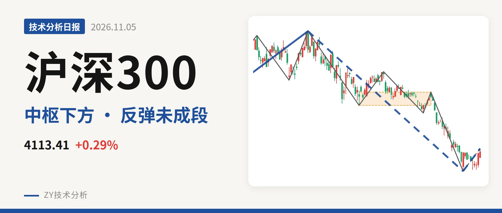
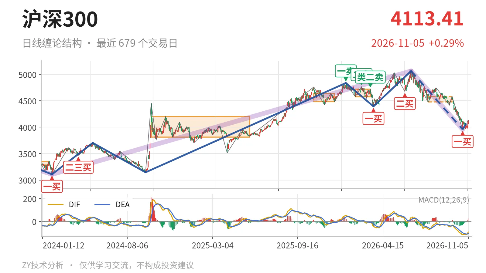
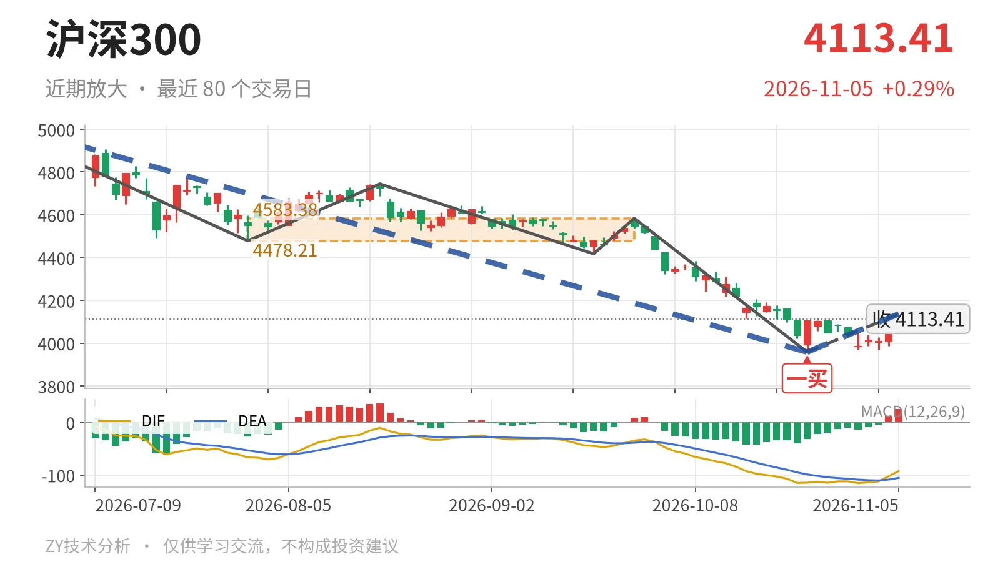

沪深300｜一买后仅一笔，反抽看4478点

最近日线中枢 4478.21—4583.38点，收盘位于中枢之下
一句话：日线反弹仅一笔未成线段，价格未回4478点，弱势反抽。
📐 走势结构：上涨段没结束，日线回调还在延续
当前仍处于2024年2月2日至2026年6月23日上涨走势内部，这段从3108.35点至5064.27点，上涨约63%，没有被破坏。但6月23日以来的日线下跌线段没有走完：从5064.27点跌至3958.14点，跌幅约21.8%，内含5笔。10月23日以来的反弹只有一笔，还不构成日线线段。因此日线层面仍是回调中的反抽，而非新的上涨段。2021年2月18日至2024年2月2日的下跌走势已经结束，不构成当前主趋势。

📍 中枢与位置：跌破最近中枢，仍在大中枢内部
最新收盘4113.41点位于最近日线笔中枢4478.21—4583.38点下方，低于下沿约8.1%。同时它落在2024年10月8日至2025年5月30日的大中枢3812.32—4200.91点内部，略高于中轴4006.61点。最近中枢中轴从2月3日至3月17日的4649.53点降至7月30日至9月22日的4530.80点，出现中枢下移。反抽不拉回4478点上方，该中枢对价格仍是压制。
🔖 买卖点：10月23日一买只对应较小级别
10月23日的3958.14点为日线笔级别一买，是当前反弹的起点。但后续只有一笔，尚未形成线段，因此该一买目前只具备笔级别意义，未被线段确认。3月24日的4394.29点一买和6月8日的4677.57点二买，因10月23日创出3958.14点新低，已退化为小级别信号，不能作为日线级别拐点。

⚡ 背驰观察：面积收缩，DIF未见配合
比较6月23日至7月30日与9月22日至10月23日两段下跌笔。前者绿柱面积650、DIF低点-66.5；后者绿柱面积494、DIF低点-115.1。价格创出新低，绿柱面积由650缩至494，但DIF低点反而更深，未出现“新低不新弱”。这说明10月23日低点只是面积背驰迹象，没有DIF配合，底背驰不够标准。当前反弹红柱面积仅39，力度有限；最新MACD的DIF为-92.5，仍在零轴之下，柱体26.1，属零轴下方的弱反抽。
🔭 关键位置观察：4478点决定是否构成三卖
上方关键观察位在4478点附近，这是最近日线笔中枢下沿。若反抽不能回到4478点上方，结构上构成三卖，6月23日以来的下跌段会延续。若重新站上4201点上方，则下跌更可能只是对大中枢的扩展，中枢震荡格局恢复。下方3958点一线若再度跌破，10月23日一买便失效。当前价格未回中枢下沿、反弹仅一笔、DIF仍在零轴下方，只能按弱势反抽看待。
⚠️ 本文为基于公开行情数据的缠论技术结构记录，由程序自动计算并生成，仅供学习交流，不构成任何投资建议。市场有风险，投资需谨慎。